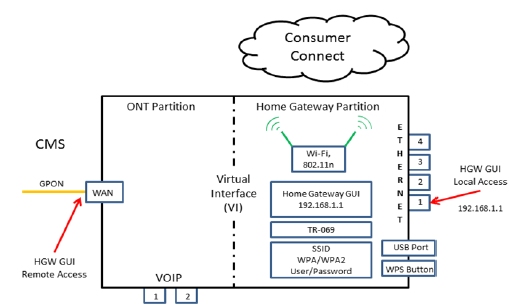
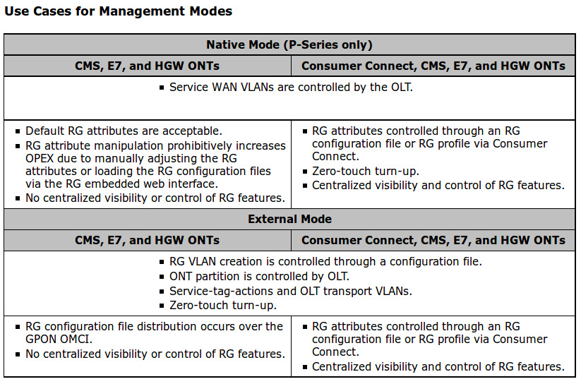
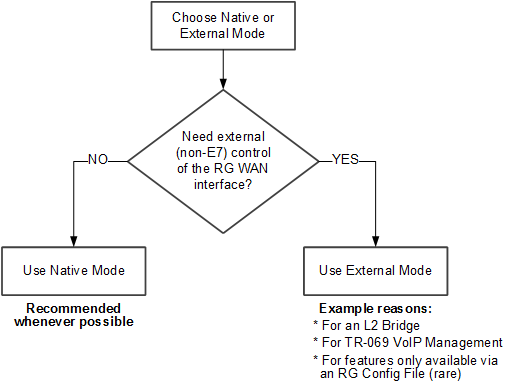
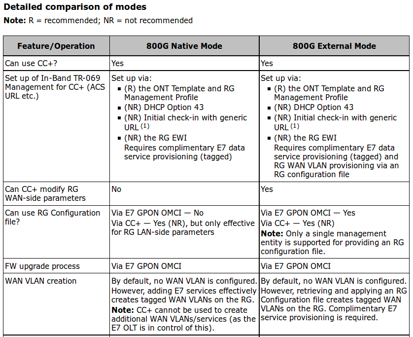
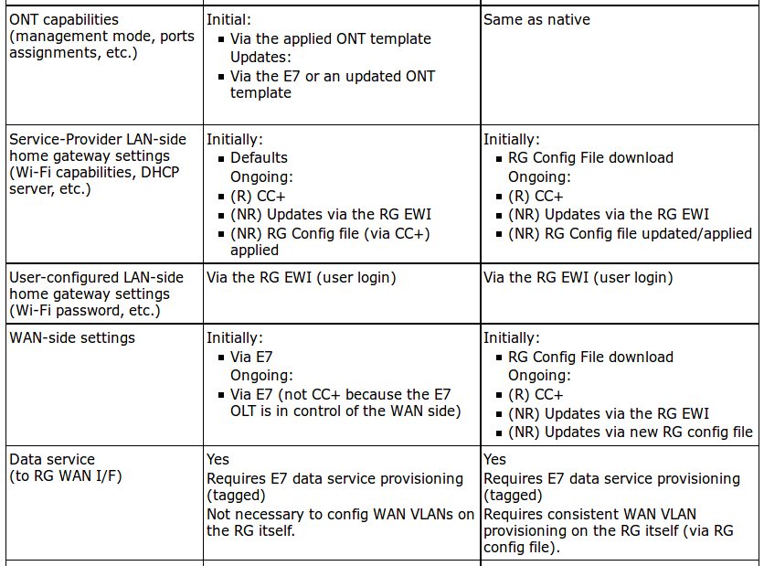
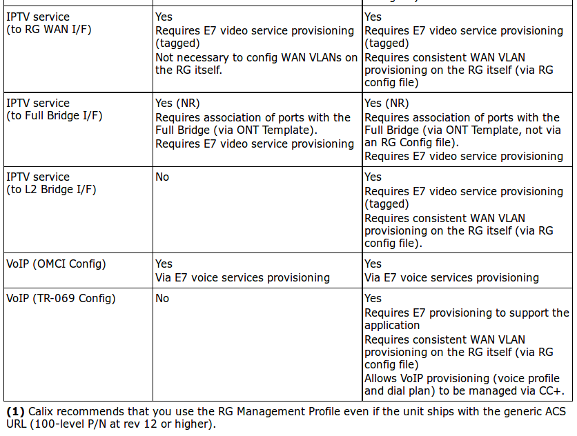
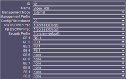
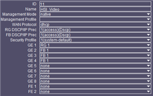

Table of Contents
1 Calix E-Series (E7 OS R2.5) GPON Applications Guide
2 GPON Solution
2.1 Supported GPON Equipment
2.1.1 Calix ONTs
In a GPON system, ONTs provide the access endpoints and may also include home gateway functionality. The E7 GPON system is interoperable with the following Calix access endpoints and gateways:
- Calix 800 GigaCenters*, GigaHubs*, and GigaPoints
- Calix P-Series 836GE RSGs*, 700GE ONTs*, and 700GX ONTs
- Calix T-Series T07xG HGUs* and T7x0G ONTs
- Calix GPON Interface Adaptor with supported Ethernet Service Access Nodes (ESANs)
*Note: These ONTs support Calix Home Gateway functionality.
2.2 Home Gateway Overview
2.2.1 Home Gateway Concepts
The following terms are used in relation to HGWs:
- LAN interface – The ports which are connected to subscriber devices. These ports are generally unmanaged and support layer-2 switching between them.
- WAN interface – The port which is connected to the access provider.
- Internal interface – This is another name for the LAN interface when talking in the context of NAT and IP address spaces. It represents an interface which is using a private/locally scoped address.
- External interface – This is another name for the WAN interface when talking in the context of NAT. It represents an interface which is using a globally scoped address.
When an HGW is provisioned, it operates with two partitions:
- Gateway partition
- Local and wireless network
- Home Gateway services
- Management using TR-069 client
- ONT partition
- ONT Management
- Subscriber Services (IPTV, voice, data, RF video)

2.2.2 Home Gateway Port Assignments
Interface Group Assignments

- When a GigaCenter, GigaHub, or 836 RSG ONT is created, all ONT Ethernet ports are assigned as members of the RG group. Ports can be removed from the RG group and added to the FB group as needed.
- When a P-Series or T-Series ONT is created, the ONT Ethernet ports are not members of any interface group, and can be added to an interface group as needed.
Examples of port assignment configurations

2.2.3 RG Management Modes
Note: P-Series GPON Calix Home Gateways include the GPON GigaCenters, GigaHubs, 836GE RSGs, and 700GE ONTs.
- Native mode
Native (P-Series only) is the default behavior where the CMS/E7 directly provision up to 4 RG WAN interfaces. However, voice and legacy L2 services are still natively supported for non-RG ports. In this mode, both the RG and ONT partitions are controlled by the CMS/E7.
- External mode
External uses an external RG configuration file that is downloaded (via inband OMCI) to the ONT to fully manage the WAN interfaces on the RG. In this mode, the CMS/E7 do not provision the RG WAN interface on the RG partition. Except that the creation of an out-of-band (OOB) management VLAN is controlled by the E7 OLT.
- The RG partition is controlled by the configuration file.
- The ONT partition is controlled by the E7 OLT.
Using an RG configuration file, a service provider is able to define up to four Routed WAN interfaces supporting data, IPTV and auxiliary service VLANs as necessary. The RG configuration can explicitly define these service VLANs along with service static routes to bridge traffic on the LAN and wireless interfaces to the correct service VLAN.
Applying a new RG configuration file will reset the RG configuration on the HGW. If a subscriber has modified any of the items below via the EWI, these changes will be lost when the new RG configuration file is applied.
- Admin password
- Primary SSID
- Primary WPA/WPA2 key
- Use Cases for Management Modes

2.2.4 Native vs. External RG Management Mode
- Native Mode (recommended whenever possible)
- Advantages
- Adding E7 services automatically creates the required service VLANs on the RG WAN interface
- No RG config files are required
- no risk of user-configured changes getting lost due to applying a new/updated RG config file
- Considerations:
- E7 is in complete control of the RG WAN interface;
- CC+ profiles or RG config files (applied via CC+) cannot effect any changes on the WAN side.
- The following cannot be provisioned on the RG WAN:
- L2 Bridge Interface
- Enabling TR-069 management of voice services (TR-069 VoIP mode and required WAN VLAN)
- E7 is in complete control of the RG WAN interface;
- Advantages
- External Mode
- Advantages
- Via an RG config file, the following can be provisioned on the RG WAN interface:
- L2 Bridge Interface
- Enabling TR-069 management of voice services (TR-069 VoIP mode and required WAN VLAN),
- which allows CC+ to apply a voice profile and dial plan.
- Other features only available via an RG Config File can be provisioned (rarely required)
- Via an RG config file, the following can be provisioned on the RG WAN interface:
- Considerations:
- Connectivity is not possible without an initial configuration via an RG config file or the EWI
- RG config files (and the associated management and overhead) are required
- user-configured changes will be lost if a new/updated RG config file is ever applied
- out-of-the-box installation time is longer (at least one more device reset is required to apply the RG config file)
- Recommendation if External mode is required:
- Use the most basic RG config file possible (not likely to require future updates)
- use CC+ for all other provisioning.
- Advantages
- Decision flowchart

- Detailed comparison of modes
  
3 Service Provisioning Workflows
3.1 Overview: HGW Applications - External Mode
- Provisioning partitions
When an ONT is configured for external mode, the E7 does not provision the RG WAN interface on the ONT(with the exception of the out-of-band TR-069 management mode). The sole responsibility for configuration of an ONT in external mode is completely dependent on the RG configuration file.
- The RG partition is controlled by the configuration file.
- The ONT partition is controlled by the E7 OLT.
When a configuration file is loaded on the ONT, there are three elements of the ONT configuration that remain specific to each ONT:
- Admin password
- Primary SSID
- Primary WPA/WPA2 key
4 Service Provisioning Examples
4.1 Example: HGW Service - External Mode
- Example deployment of services using the E7 configuration file:
- Step 1: Configure network uplinks
- Step 2: Create system profiles
- Create an ONT Template.
Using CMS R12.1, you can provision an ONT template that defines all of the key management aspects of the ONT as well as the logical assignments of physical GE ports.
- Management mode: external
- WAN protocol: DHCP
- DSCP/IP Precedence: access
- Security profile: system-default
- RG: GE 1
- FB: GE 2, GE 3, GE 4
- CMS > Profile > E7/ONT > Templates > ONT > Create

- Step 3: Configure a PON
- Step 4: Configure subscriber services
4.2 Example: HGW Service - P-Series Native Mode
- Best Practice:
- Step 1: Configure network uplinks
- Step 2: Create system profiles
- Create an ONT Template.
Using CMS R12.1, you can provision an ONT template that defines all of the key management aspects of the ONT as well as the logical assignments of physical GE ports.
- Management mode: Native
- WAN protocol: DHCP
- DSCP/IP Precedence: access
- Security profile: system-default
- RG: GE 1
- FB: GE 2, GE 3, GE 4
- CMS > Profile > E7/ONT > Templates > ONT > Create

- Step 3: Configure a PON
- Step 4: Configure subscriber services
4.3 Example: HGW Service - TR-069
- Example deployment of services using the E7 configuration file:
- In-Band Management Mode
- Out-of-Band Management Mode